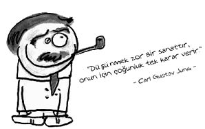

Carl Gustav Jung (1875-1961)
İsviçreli psikiyatr, felsefeci, analitik psikolojinin kurucusu...
Carl, mutsuz bir çocukluk geçirdi. Anne ve babasının onun yanında tartışmaları dahi onu çok mutsuz etti. Annesi, duygusal problemleri olan dengesiz bir kadındı. Kavgalar ayrılıkla sonuçlandı. Babasına hayran bir sarışın, eve üvey anne olarak geldi. Carl, babasını hep güçsüz bir adam olarak gördü. Bir din adamı olan babası, oğlunun Tanrı konusundaki sorularına, “Sen hep düşünmek istiyorsun. Oysa insan düşünmemeli, inanmalı.” diye cevap veriyor, Carl da “Öyleyse bana o inancı ver.” diye yanıtlıyordu babasını.
Carl’ın okul hayatı da pek parlak değildi. Özellikle matematik ve resim derslerinde oldukça başarısızdı. Bir gün arkadaşlarının birinden yediği omuz sonucu düşüp başını taşa vurdu ve bayıldı. Jung, sonraları bu bayılmayı bir kaçma mekanizması olarak kullandı. Öğretmenleri onu aptal ve sinsi buluyor, yazdığı kompozisyonları onun yazdığına inanmıyorlardı. Zooloji okumayı düşünüyordu. Öğretmenleri onun bu fikrini, hiç değilse hayvanat bahçesinde bir memur olur diye destekliyorlardı. Fakat sonraları Jung doktor olabileceğini düşündü ve ruhsal rahatsızlığı olan bir insanın içinde neler olup bittiğini merak ettiği için psikiyatriyi meslek olarak seçti.
Hastalarını ve rüyalarını inceleyip onların rüyalarını yorumlamaya çalıştığı sıralarda Freud’la tanıştı. Başlangıçta Freud’un mirasçısı olarak görülse de Freud’un rüyaları doğru yorumlayamadığını düşündüğü ve birçok konuda fikirlerine katılmadığı için daha sonra yolları ayrıldı. Freud’un ödipal kompleks sürecini de reddeden Jung, çocuğun anneye olan düşkünlüğünü, annenin çocuğun ihtiyaçlarını karşılaması açısından açıklıyordu.
Otuz sekiz yaşındayken şiddetli duygusal sorunlar yaşamaya başladı, hatta öyle ki örneğin evde otururken zil çaldığını söylüyordu, kapıyı açtıklarında kimsenin olmadığını görüyorlardı ama Jung içeri ruhların dolduğunu, eline kalemi alıp yazmaya başladığında ise hepsinin evi terk ettiğini söylüyordu. Bu çatışmaları kendi bilinçdışıyla yüzleşerek çözümlemeye çalıştı.
Altmış dokuz yaşında iken kalp krizi geçirdi, bundan sonra daha dini bakış açıları geliştirdi. Anlattığına göre, ruhu uzaktan izleyebiliyordu. Uykusunda doktorunu Kos kralı olarak görmüş ve Jung bunu doktorun kendisinden önce öleceği şeklinde yorumlamıştı, nitekim öyle de oldu. Birkaç gün içinde doktoru öldü. Jung ise ondan yıllar sonra tam seksen altı yaşında öldü.
Jung, Freud’la ilişkilerinin yanı sıra içedönüklük ve dışadönüklük tartışmaları ile de tanınır. Ona göre dışadönük kişiler dış faktörlerden kolay etkilenir, özgüvenleri tamdır ve sokulgandırlar. İçedönük kişiler dış etkenlere karşı dayanıklıdırlar, alıngandırlar ve özgüvenleri azdır. Bir insanda bu iki kavram da bulunur, fakat biri diğerine daha baskın gelir. “Gölgelenmiş kişilik” denilen yapımız ise, gizlediğimiz kendimizin de fark edemediği, alkol kullananlarda da gözlenebilen, bilincimizin baskıdan kurtulduğu anlarda ortaya çıkan yanımızdır.
z
Ne demiş Jung…
• Diğerinin sevmediğimiz özellikleri, kendi kendimizi bulmaya yardım edebilir. Duygusuz karanlığı aydınlatamayız ve bitkinliği harekete çeviremeyiz.
• Yalnızlık, insanın çevresinde insan olmaması demek değildir. İnsan kendisinin önemsediği şeyleri başkalarına ulaştıramadığı ya da başkalarının olanaksız bulduğu bazı görüşlere sahip olduğu zaman kendisini yalnız hisseder.
• Tümüyle emin olduğum hiçbir şey yok. Tümüyle inandığım bir şey de gerçekten yok. Tek bildiğim, doğduğum ve var olduğum.
• Doğduğumuz dünya çok acımasız, ama aynı zamanda ilahi bir güzelliği var. Anlamlı oluşunun mu, yoksa anlamsızlığının mı ağır bastığına karar vermek, insanın yapısına bağlı.
• Günümüzde, bizi tehdit eden tehlikenin doğadan gelmediğini, insan ve kitle ruhundan kaynaklandığını apaçık görüyoruz. Tehlike insanın ruhundan kopmuş olmasında.
• Tanrı Âdem ile Havva’yı, düşünmek istemediklerini düşünmek zorunda bırakacak biçimde yaratmıştır.
• Mars gezegenine ulaşmak, kendi kendine ulaşmaktan daha kolaydır.